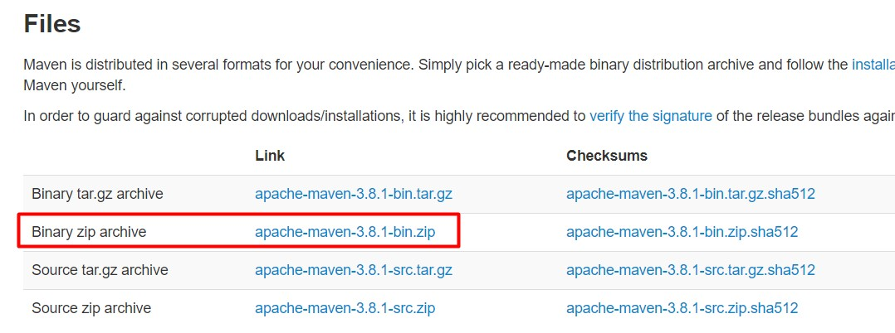

Αυτή είναι η πρώτη από μια σειρά δωρεάν ενοτήτων στην τεχνολογία Apache Maven.
Η γνώση και η εκπαίδευση στην λειτουργία του Apache Maven είναι απαραίτητη εάν και εφόσον θέλετε
γίνεται Java προγραμματιστές. Το Apache Maven είναι ένα ανοιχτού-κώδικα project που έχει ένα
δομημένο και απλό τρόπο να δημιουργεί, να διαχειρίζεται και να τεστάρει java projects.
Παρέχει όμως και άλλες δυνατότητες όπως εύκολη διαχείριση των βιβλιοθηκών στις οποίες
στηρίζεται το project αλλά και εύκολη συμβατότητα και επικοινωνία με προϊόντα όπως
Jenkins και Bamboo. Πριν όμως αναλύσουμε όλες τις δυνατότητες του και πως αυτές
συνδυάζονται με την Java γλώσσα προγραμματισμού, θα πρέπει να το εγκαταστήσουμε
και να το ενσωματώσουμε με το αγαπημένο μας IDE (περιβάλλον ανάπτυξης Java εφαρμογών).
Ας δούμε λοιπόν τα βήματα που πρέπει να ακολουθήσουμε για να εγκαταστήσουμε επιτυχώς
το Apache Maven.
Το Apache Maven είναι μια εφαρμογή που στηρίζεται στην Java για να
λειτουργήσει σωστά. Οπότε σαν πρώτο βήμα θα πρέπει να εγκαταστήσουμε
το Java Development Kit (JDK) και να το δηλώσουμε σωστά στο λειτουργικό
μας σύστημα. Αν κοιτάξουμε το web site της
Oracle (https://www.oracle.com/technetwork/java/javase/downloads/index.html) ,
θα παρατηρήσουμε ότι αν και η τελευταία έκδοση της Java είναι η 13.0.1, η έκδοση
11.0.5 είναι εκείνη που θα υποστηρίζεται για αρκετό καιρό επειδή η Oracle την
έχει χαρακτηρίσει σαν LTS (Long-Term Support). Για αυτό ακριβώς το λόγο, θα
προτιμήσουμε και εμείς να κατεβάσουμε και να εγκαταστήσουμε την έκδοση Java SE 11.0.5.
Όλα τα παραδείγματα σε αυτή την ενότητα είναι σε Windows 10.

Μετά το πέρας της εγκατάστασης της Java SE 11.0.5. θα πρέπει να δηλώσουμε στα
Windows 10 που έχει εγκατασταθεί η Java έτσι ώστε να μπορούμε να την καλέσουμε από
οποιοδήποτε directory μέσα από το command terminal. Για αυτόν το σκοπό, θα πρέπει να
πάμε στα Environment Variables των Windows 10 και να δημιουργήσουμε μια καινούργια
μεταβλητή με το όνομα JAVA_HOME η οποία θα έχει σαν Value το path στο οποίο
βρίσκεται η Java.
Τώρα θα πρέπει να δηλώσουμε στα Windows 10 την τοποθεσία που βρίσκεται
το εκτελέσιμο αρχείο της Java (java.exe). Επιλέγουμε την System Variable
Path και κάνουμε κλικ στο κουμπί Edit.

Δηλώστε την μεταβλητή JAVA_HOME που έχετε ορίσει συν τον bin
φάκελλο μέσα στον οποίο βρίσκεται το εκτελέσιμο αρχείο της Java. Πατήστε ΟΚ να
ολοκληρώσετε την διαδικασία.

Αν ανοίξουμε ένα cmd terminal στα Windows 10 και γράψουμε java -version θα πρέπει
να λάβουμε το ακόλουθο αποτέλεσμα:
Σαν δεύτερο βήμα τώρα, θα πρέπει να κατεβάσουμε και να αποσυμπιέσουμε το
Apache Maven. Από το web site της
Apache (https://maven.apache.org/download.cgi)
κατεβάζουμε την τελευταία έκδοση του Maven η οποία είναι η 3.6.3.

Αφού κατεβάσουμε το αρχείο, το κάνουμε unzip μέσα στο folder
ή directory που επιθυμούμε. Για να μπορέσουμε όμως να καλέσουμε το Maven
σε ένα cmd terminal από οποιοδήποτε path και αν βρισκόμαστε, θα πρέπει να το
δηλώσουμε και αυτό (όπως κάναμε και με την Java) στα System Variables των Windows 10.
Δηλώνουμε λοιπόν μια καινούργια μεταβλητή με το όνομα M2_HOME η οποία θα έχει
σαν τιμή το path στο οποίο βρίσκεται το unzip αρχείο του Maven.
Τώρα θα πρέπει να δηλώσουμε στα Windows 10 που βρίσκεται το εκτελέσιμο αρχείο
του Maven. Οπότε επιλέγουμε πάλι την μεταβλητή Path, πατάμε Edit και προσθέτουμε
την M2_HOME μεταβλητή μαζί με τον bin φάκελο του Maven.
Πατήστε ΟΚ όταν τελειώσετε την διαδικασία.
Αν λοιπόν ανοίξουμε ένα cmd terminal και εκτελέσουμε την εντολή mvn -v θα πρέπει
να πάρουμε πίσω το εξής αποτέλεσμα:
Μέχρι αυτό το σημείο έχουμε εγκαταστήσει όλα τα εργαλεία
που χρειάζονται για να δημιουργήσουμε java projects με το
Apache Maven. Επειδή όμως όλα τα μοντέρνα εργαλεία έχουν την
ικανότητα ενσωμάτωσης του Apache Maven στο περιβάλλον τους, ας
προχωρήσουμε και σε αυτό το βήμα για να ολοκληρώσουμε την εργαλειοθήκη
μας και να έχουμε ένα ολοκληρωμένο περιβάλλον ανάπτυξης εφαρμογών Java
χρησιμοποιώντας Maven.
Στα δικά μας δωρεάν μαθήματα Apache Maven θα χρησιμοποιήσουμε
το Community Edition (δωρεάν) του IntelliJ IDEA που μπορείτε
να κατεβάσετε από εδώ:
(https://www.jetbrains.com/idea/download/#section=windows) .

Αφού το εγκαταστήσετε, ξεκινήστε το για να πάμε στις επιλογές του.
Ίσως χρειαστεί να δημιουργήσετε ένα πρόχειρο Java project για
να σας αφήσει να προχωρήσετε. Δημιουργείστε ένα java project δίνοντας
ότι όνομα θέλετε. Όταν το περιβάλλον του IntelliJ είναι έτοιμο,
πηγαίνουμε File → Settings → Build, Execution, Deployment → Build Tools → Maven και
αλλάζουμε το Maven Home Directory σε αυτό που έχουμε ήδη εγκαταστήσει.
Δεν χρειάζεται να το ξαναγράψετε, θα είναι έτοιμη η επιλογή για να την επιλέξετε.

Πατήστε Apply και μετά ΟΚ για να ολοκληρώσετε την διαδικασία.
Το περιβάλλον μας είναι έτοιμο τώρα. Από την επόμενη ενότητα
θα αρχίζουμε να αναλύουμε όλες τις επιλογές που έχουμε
για την δημιουργία ενός java project και πως μπορούμε
να προσθέτουμε third party libraries που δεν βρίσκονται
στην εγκατάσταση της java αλλά χρειάζονται για την σωστή
λειτουργία του κώδικα μας.
Michail Kassapoglou Admin
Γεια σας, είμαι ο Μιχάλης Κασάπογλου και θα σας διδάξω με τον ποιο απλό
τρόπο να χρησιμοποιείτε το Apache Maven για την δημιουργία όλων των Java και Java EE project σας. Ασχολούμαι με την τεχνική εκπαίδευση
σε διάφορες πλατφόρμες, λειτουργικά συστήματα και γλώσσες προγραμματισμού
πάνω από 20 έτη. Κατέχω έναν αρκετά μεγάλο αριθμό πιστοποιήσεων Microsoft και Oracle
και σαν Τraining Lead στην Intrasoft έχω την δυνατότητα να αναβαθμίζω συνεχώς
τις γνώσεις μου και να έχω άμεση επαφή με αληθινά projects και εξειδικευμένες μεθόδους
ανάπτυξης εφαρμογών που έχουν υψηλές απαιτήσεις.
Για τυχόν ερωτήσεις σας μπορείτε να επικοινωνήσετε μαζί μου
στο Michail.Kassapoglou@gmail.com
Σας ευχαριστώ που επισκεφτήκατε την ιστοσελίδα μου.